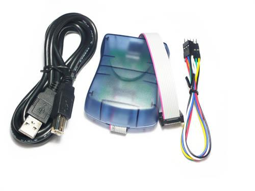
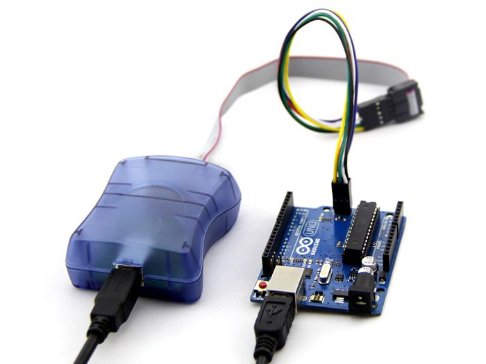
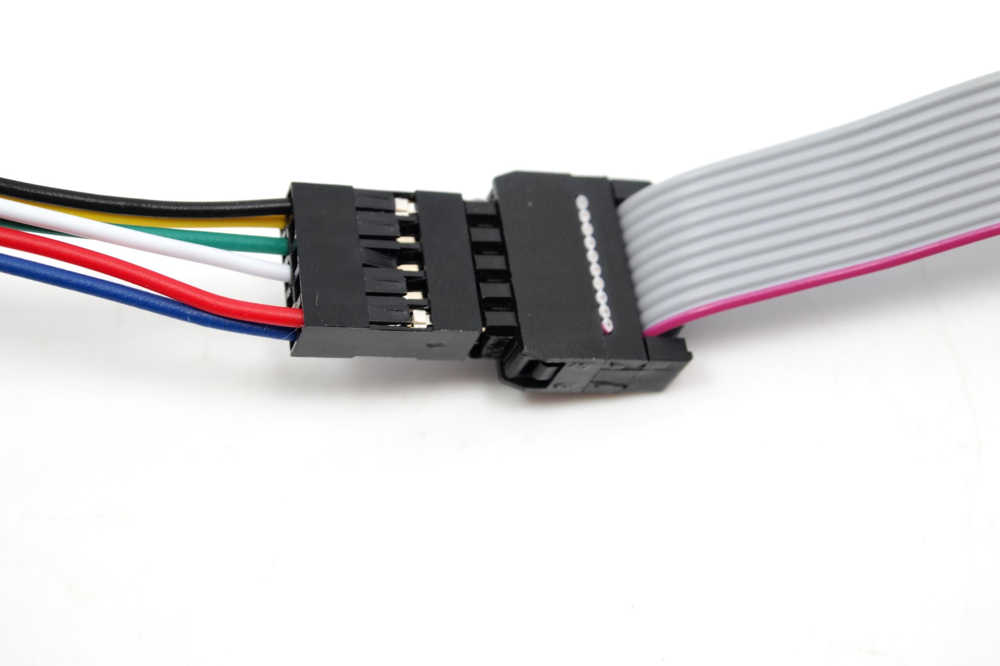
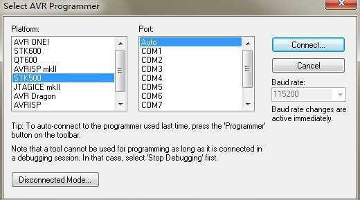
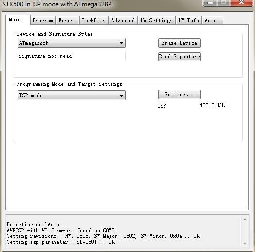
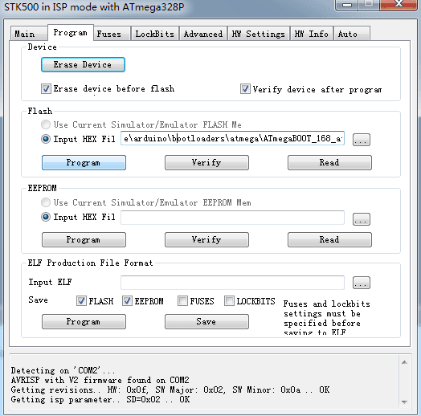

AVRISP2.0 STK500 programmer communicates with PC via USB port, and it works with most of PC & notebook computers.
Note: It is chinese version with PL2303(USB to Serial).
Model: TOL102C3B

| AT90S1200 | AT90S2313 | AT90S2323 | AT90S2343 |
| AT90S4433 | AT90S8515 | AT90S8535 | ATmega128 |
| ATmega1280 | ATmega1281 | ATmega128RZAV | ATmega128RZBV |
| ATmega16 | ATmega161 | ATmega162 | ATmega163 |
| ATmega164P | ATmega164P Automotive | ATmega165 | ATmega168 |
| ATmega168 Automotive | ATmega168P | ATmega169 | ATmega16A |
| ATmega16U4 | ATmega2560 | ATmega2561 | ATmega256RZAV |
| ATmega256RZBV | ATmega32 | ATmega323 | ATmega324P |
| ATmega324P automotive | ATmega325 | ATmega3250 | ATmega3250P |
| ATmega325P | ATmega328P | ATmega329 | ATmega3290 |
| ATmega3290P | ATmega329P | ATmega32A | ATmega32U4 |
| ATmega48 | ATmega48 Automotive | ATmega48P | ATmega64 |
| ATmega640 | ATmega644 | ATmega644P | ATmega644P Automotive |
| ATmega645 | ATmega6450 | ATmega649 | ATmega6490 |
| ATmega8535 | ATmega88 | ATmega88 Automotive | ATmega88P |
| ATtiny12 | ATtiny13 | ATtiny13A | ATtiny15L |
| ATtiny2313 | ATtiny26 | ATtiny88 |
http://www.tupianguanjia.com/bin/3455/avrisp2/avr_isp.jpg

1.How to connect : See the picture above
2.Install AVRISP driver in the CD .
3.Download AVR STUDIO4.19 and install it.
Caution : The AVR STUDIO4.13 software in the CD can no support ATmega328P.
4.Burn Bootloader to Arduino UNO
-> Open AVR STUDIO4.19
-> Connect to STK500
->Select Platform

->Select Device "ATmega328P"

->Select Bootloader > Path:\arduino-1.0\hardware\arduino\bootloaders\optiboot\optiboot_atmega328.hex

->Program
Please list your question here:
Click here to buy: Atmel AVRISP STK500 USB ISP Programmer.
Other related products and resources.Mobile USB AVRISP programmer
This documentation is licensed under the Creative Commons Attribution-ShareAlike License 3.0 Source code and libraries are licensed under GPL/LGPL, see source code files for details.
Links to external webpages which provide more application ideas, documents/datasheet or software libraries
Copyright (c) 2008-2016 Seeed Development Limited (www.seeedstudio.com / www.seeed.cc){kind=link}